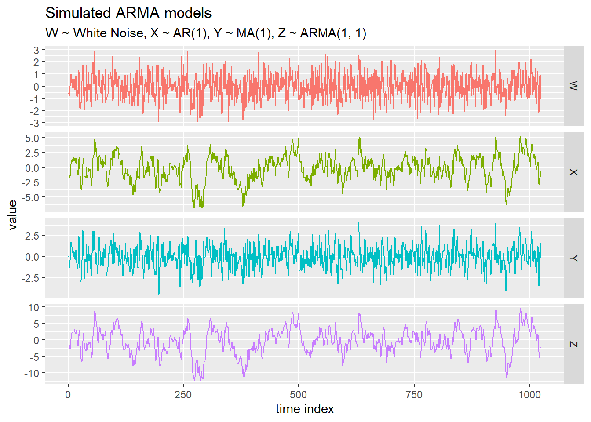
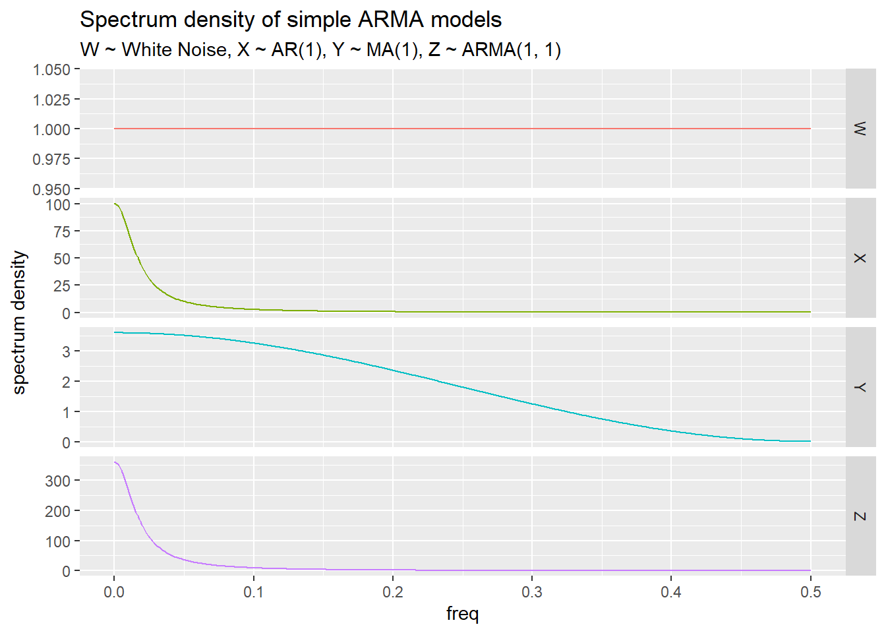
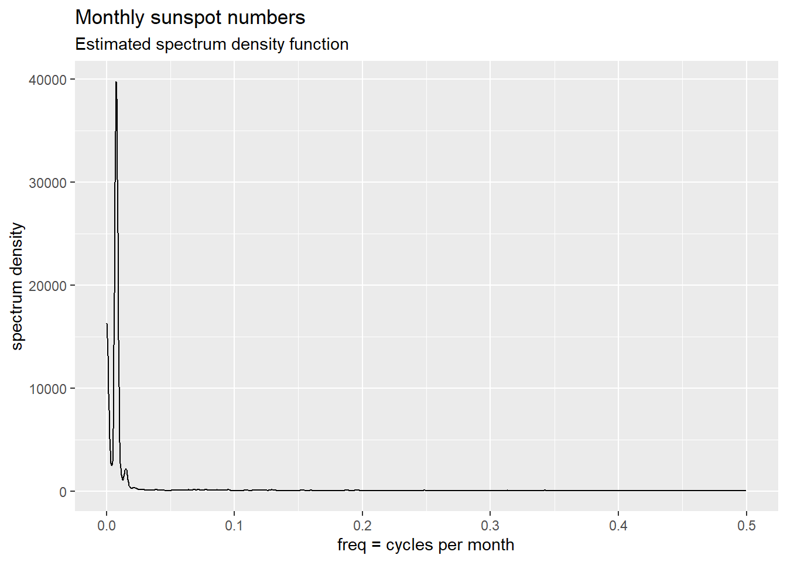
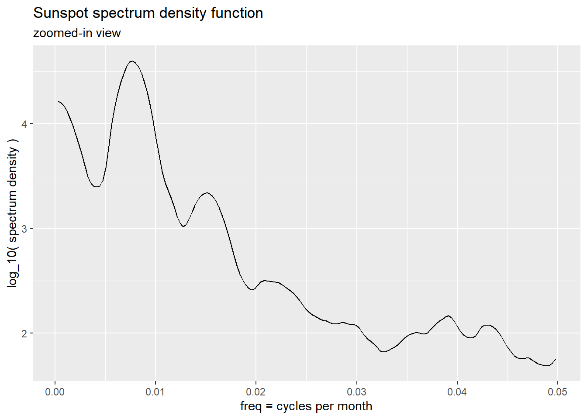
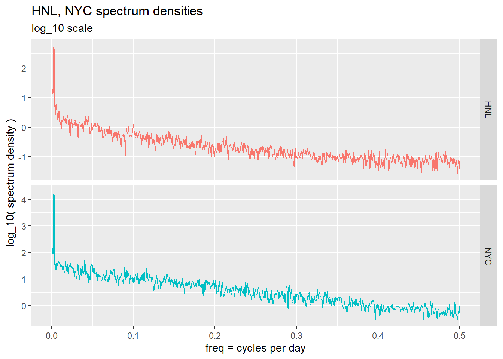
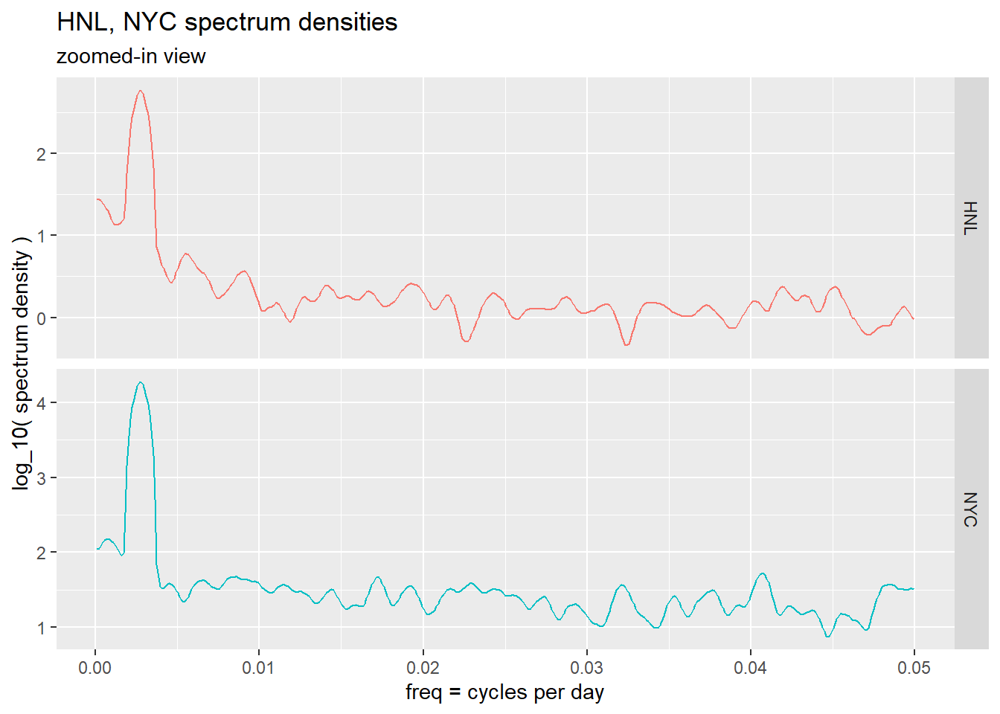
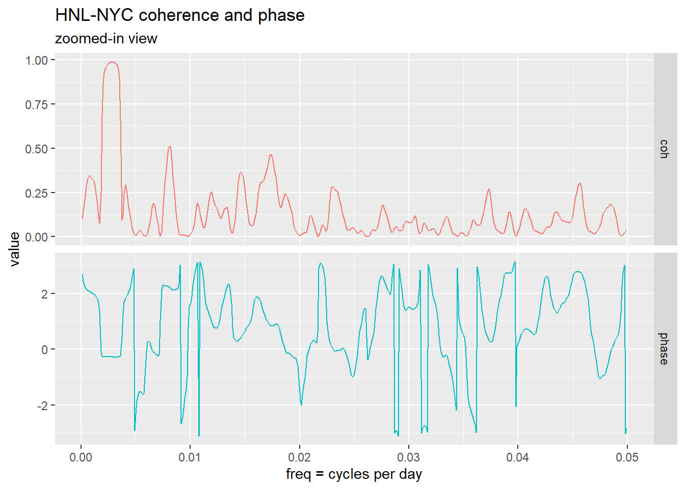
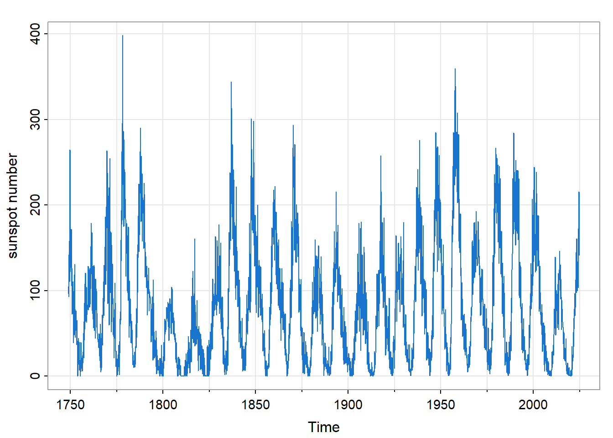
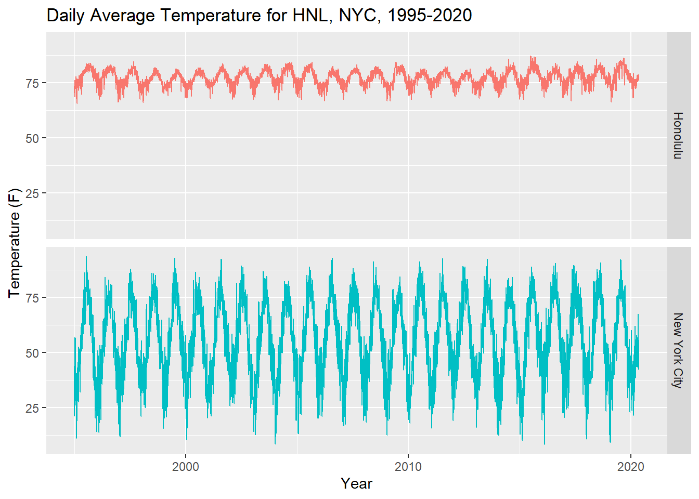

13 Time Series Spectrum Analysis
An Introduction
Abstract
Introduce the Fourier spectrum of a time series. 13.1 Introduction
The analysis of time series has proved to have both pragmatic and scientific value. For time series that track business activity or broader economic activity, the ability to forecast future values with some degree of reliability has evident practical value. The potential of such forecasting has influenced the development of time domain models, notably auto-regressive moving average (ARMA) models.
On the other hand, natural processes often exhibit periodic behavior, and have given rise to the Fourier decomposition of such time series, that is, the representation of the process as a sum of sine waves over a range of frequencies.
13.1.1 Sunspots
An early example of such periodic behavior is shown in Figure 13.8, the time series of monthly sunspot numbers. Sunspots have been observed for millennia, but systematic scientific observations began in the 1600’s.1
Sunspots are a key indicator of the solar magnetic activity cycle in which the sun’s magnetic polarity reverses every 11 years or so. At the peak of a cycle the sun emits bursts of charged particles (solar flares) across the solar system that affect the Earth. Consequently, understanding the solar cycle has both scientific and practical value.
Gaps between peak sunspot numbers vary, so a simple sinusoidal wave (or other function) having a fixed period does not fit the data well. On the other hand, the variability of the data is clarified by Fourier decomposition and subsequent grouping of fitted sine waves within successive bands of frequencies. This approach is discussed in Section 13.2.
13.1.2 Average daily temperatures
Figure 13.9 shows average daily temperatures for Honolulu and New York City over a 25-year period (1995-2020). The overall average temperature in NYC is about 56 (F), well below that of Honolulu (77). Also note that the standard deviation of NYC temperatures,17.1 (F), is well above that of Honolulu (3.4). So Honolulu temperatures are higher than those of NYC and fluctuate less (as visitors to those two cities may testify). Less clear, however, is the degree to which seasonal variation accounts for the overall variation in each city. This is a question that can be addressed by Fourier decomposition.
13.2 Mathematical Framework
13.2.1 Data derived from a random process
Statistical data usually take the form of one or more data frames in which each row represents an observation and each column represents a variable of interest. For example, here are the first few values of the temperature data shown in Figure 13.9.
# A tibble: 9,265 × 3
date HNL NYC
<date> <dbl> <dbl>
1 1995-01-01 71.3 44
2 1995-01-02 72.5 41.8
3 1995-01-03 73.2 28.1
# ℹ 9,262 more rowsThe distinction of time series analysis is that observations are indexed by time2, and are not assumed to be statistically independent. Instead, time series data are typically modeled as a realization of a random process of the following form.3
\[ \begin{align} X_\bullet (t) = (X_1 (t), \ldots, X_d (t)) \in \mathbb{R}^d \end{align} \qquad(13.1)\]
If the number of data columns is two or greater \((d \ge 2)\), the process is said to be multivariate. Otherwise, if \(d = 1\) the process is said to be univariate, and the notation is simplified to \(X (t)\).4
In our example there are two data columns (HNL, NYC), so that \(d = 2\), the unit of time is one day, and the sampling frequency is once per day.
The random process is idealized to span all time \((t \in \mathbb{Z})\), but the data of course span some finite period, \(\tau_T\), of length \(T\).
\[ \begin{align} \tau_T &= \{ t_0, \; t_0 + 1, \ldots, t_f \} \\ t_0 &= \text{ initial data index} = \min \tau_T \\ t_f &= \text{ final data index} = \max \tau_T \\ T &= \text{ number of observatons } = t_f - t_0 + 1 \\ \nu_T &= \tau_T - t_0 = \{ 0, 1, \ldots, T-1 \} \end{align} \qquad(13.2)\]
The expected value of the random process may be modeled by various functions of time: a constant, a linear trend, a seasonal component (periodic function), etc.
\[ \begin{align} m_\bullet (t) &= E \{ X_\bullet (t) \} \end{align} \qquad(13.3)\]
13.2.2 Stationarity
In an additive model (which is most common), the centered random process, \(X_\bullet (t) - m_\bullet (t)\) , is assumed to be second-order stationary.5 That is, if we shift \(X_\bullet (\cdot)\) by any number of time units \(s\) to obtain a new process \(Y_\bullet (\cdot)\), we assume that the respective covariance structures of \(X_\bullet (\cdot)\) and \(Y_\bullet (\cdot)\) are the same.
\[ \begin{align} Y_\bullet (t) &= \mathcal{B}^s \{ X_\bullet (\cdot) \} (t) \\ &= X_\bullet (t - s) \end{align} \qquad(13.4)\]
Here \(\mathcal{B}\) denotes the back-shift operator that shifts time by one unit, so that \(\mathcal{B}^s\) (that is, \(s\) repeated applications of \(\mathcal{B}\)) shifts time by \(s\) units. Then second-order stationarity can be expressed as follows.
\[ \begin{align} Cov \{ X_a (t + u), X_b (t) \} &= Cov \{ Y_a (t + u), Y_b (t) \} \\ &= Cov \{ X_a (t + u - s), X_b (t - s) \} \\ \\ & \text{for all } s \in \mathbb{Z} \text{ and } a, b \in \{ 1, \ldots, d \} \end{align} \]
13.2.3 Auto-covariance function
Setting \(s = t\) in the last expression we have
\[ \begin{align} Cov \{ X_a (t + u), X_b (t) \} &= Cov \{ X_a (u), X_b (0) \} \end{align} \qquad(13.5)\]
Consequently, second-order stationarity enables one to define and estimate the following auto-covariance function.
\[ \begin{align} \gamma_{\bullet, \bullet} (u) &= \left \{ \gamma_{a, b} (u) \right \}_{a, b = 1}^d \\ \\ \text{where} \\ \\ \gamma_{a, b} (u) &= Cov \{ X_a (t + u), X_b (t) \} \\ &= Cov \{ X_a (u), X_b (0) \} \end{align} \qquad(13.6)\]
Although \(\gamma_{\bullet, \bullet} (u)\) is a symmetric matrix at \(u = 0\), it is not generally symmetric at \(u \ne 0\). The symmetry relation we do have is that matrix \(\gamma_{\bullet, \bullet} (-u)\) is the transpose of matrix \(\gamma_{\bullet, \bullet} (u)\).
\[ \begin{align} \gamma_{a, b} (-u) &= Cov \{ X_a (t - u), X_b (t) \} \\ &= Cov \{ X_a (t), X_b (t + u) \} \\ &= Cov \{ X_b (t + u), X_a (t) \} \\ &= \gamma_{b, a} (u) \end{align} \qquad(13.7)\]
In particular, \(\gamma_{a, a} (\cdot)\) is an even function: \(\gamma_{a, a} (-u) = \gamma_{a, a} (u)\).
Consequently, the time-reversed process \(Y_\bullet (t) = X_\bullet (-t)\) has the same auto-covariance structure as the original process, allowing for this matrix transposition.
The autocorrelation (ACF) function \(\rho_{\bullet, \bullet}(\cdot)\) is the following scaled version of the auto-covariance function.
\[ \begin{align} \rho_{\bullet, \bullet} (u) &= \left \{ \rho_{a, b} (u) \right \}_{a, b = 1}^d \\ \\ \text{where} \\ \\ \rho_{a, b} (u) &= corr \{ X_a (u), X_b (0) \} \\ &= \frac{\gamma_{a, b} (u)}{\sqrt{\gamma_{a, a} (0) \; \gamma_{b, b} (0)}} \end{align} \qquad(13.8)\]
13.2.4 Spectrum
The term “spectrum” in its modern sense was introduced by Sir Isaac Newton6 7, who used a prism to decompose sunlight into a rainbow of colors (light of different wavelengths or frequencies). The term came to mean the intensity8 (denoted “I”) of light (or other wave phenomena) as a function of wavelength or frequency.
Sine waves, more precisely complex-valued functions of the form
\[ \begin{align} f(t) = \rho e^{i \lambda t + \phi} \end{align} \qquad(13.9)\]
are widely used as the basis of this frequency decomposition, for a function of this form is an eigen-function of the back-shift operator \(\mathcal{B}\).
\[ \begin{align} \{ \; \mathcal{B}^s f(\cdot) \; \} \; (t) &= f(t-s) \\ &= \rho e^{i \lambda (t - s) + \phi} \\ &= e^{- i \lambda s} \; \rho e^{i \lambda t + \phi} \\ &= e^{- i \lambda s} \; f (t) \end{align} \qquad(13.10)\]
13.2.5 Spectrum density functions
The spectrum density function, \(f_{\bullet, \bullet} (\lambda)\), of the random process \(X_\bullet(\cdot)\) is defined as the Fourier transform of the auto-covariance function \(\gamma_{\bullet, \bullet} (u)\).
\[ \begin{align} f_{\bullet, \bullet} (\lambda) &= \sum_{u = -\infty}^\infty \gamma_{\bullet, \bullet} (u) \times e^{- i \lambda u} \end{align} \qquad(13.11)\]
where we assume that the elements of \(\gamma_{\bullet, \bullet} (\cdot)\) are absolutely summable.
\[ \begin{align} \sum_{u = -\infty}^\infty \left | \; \gamma_{a, b} (u) \; \right | &< \infty \\ &\text{for } a, b \in \{1, \ldots, d \} \end{align} \qquad(13.12)\]
Equation 13.12 is an example of a “mixing” condition. It implies that \(X_\bullet(t)\) and \(X_\bullet(t + u)\) have vanishingly small correlation as \(|u| \rightarrow \infty\).
Setting \(b = a\), we obtain \(f_{a, a} (\cdot)\), called the power spectrum of \(X_a (\cdot)\).
If \(b \ne a\) then \(f_{a, b} (\cdot)\) is called the cross-spectrum of \(\{ X_a (\cdot), X_b (\cdot) \}\). The coherency of \(X_a(\cdot), X_b(\cdot)\) at frequency \(\lambda\), denoted \(R_{a, b} (\lambda)\), is the following normalization of the cross-spectrum.
\[ \begin{align} R_{a, b} (\lambda) &= \frac{f_{a, b}(\lambda)}{\sqrt{f_{a, a}(\lambda) f_{b, b}(\lambda)}} \end{align} \qquad(13.13)\]
The modulus-squared of coherency, \(| R_{a, b} (\lambda) |^2\), is called the coherence of \(\{ X_a (\cdot), X_b (\cdot) \}\) at frequency \(\lambda\). Similar to a squared correlation coefficient, this is a non-negative value no greater than unity. And the radian angle, \(Arg( R_{a, b} (\lambda) )\), is called the phase of \(\{ X_a (\cdot), X_b (\cdot) \}\) at frequency \(\lambda\).
From Equation 13.11 we see that \(f_{\bullet, \bullet} (\lambda)\) is periodic with period \(2 \pi\).
\[ \begin{align} f_{\bullet, \bullet} (\lambda + 2 \pi) &= f_{\bullet, \bullet} (\lambda) \end{align} \qquad(13.14)\]
Due to the symmetries of the auto-covariance function (Equation 13.7), the spectrum density matrix is Hermitian, that is, equal to its own conjugate transpose.
\[ \begin{align} f_{\bullet, \bullet} (\lambda)^* &= \sum_{u = -\infty}^\infty \gamma_{\bullet, \bullet} (u)^* \times e^{i \lambda u} \\ &= \sum_{u = -\infty}^\infty \gamma_{\bullet, \bullet} (-u) \times e^{i \lambda u} \\ &= \sum_{\nu = -\infty}^\infty \gamma_{\bullet, \bullet} (\nu) \times e^{- i \lambda \nu} \\ &= f_{\bullet, \bullet} (\lambda) \end{align} \qquad(13.15)\]
We also have that matrix \(f_{\bullet, \bullet} (- \lambda)\) is the transpose of \(f_{\bullet, \bullet} (\lambda)\).
\[ \begin{align} f_{\bullet, \bullet} (- \lambda) &= \sum_{u = -\infty}^\infty \gamma_{\bullet, \bullet} (u) \times e^{i \lambda u} \\ &= \sum_{u = -\infty}^\infty \gamma_{\bullet, \bullet} (-u)^\prime \times e^{i \lambda u} \\ &= \sum_{\nu = -\infty}^\infty \gamma_{\bullet, \bullet} (\nu)^\prime \times e^{- i \lambda \nu} \\ &= f_{\bullet, \bullet} (\lambda)^\prime \end{align} \qquad(13.16)\]
That is
\[ \begin{align} f_{a, b} (- \lambda) &= f_{b, a} (\lambda) \end{align} \qquad(13.17)\]
Setting \(b = a\) we see that the power spectrum is an even function.
\[ \begin{align} f_{a, a} (- \lambda) &= f_{a, a} (\lambda) \end{align} \qquad(13.18)\]
Lastly, Equation 13.11 has the following inverse.
\[ \begin{align} \gamma_{\bullet, \bullet} (u) &= \frac{1}{2 \pi} \int_{- \pi}^\pi f_{\bullet, \bullet} (\lambda) \times e^{i \lambda u} \; d\lambda \end{align} \qquad(13.19)\]
Setting \(u = 0\) we see that \(\gamma_{\bullet, \bullet} (0)\), the variance-covariance matrix of \(X_\bullet (t)\), is the average value of \(f_{\bullet, \bullet} (\cdot)\).
\[ \begin{align} \gamma_{\bullet, \bullet} (0) &= \frac{1}{2 \pi} \int_{- \pi}^\pi f_{\bullet, \bullet} (\lambda) \; d\lambda \end{align} \qquad(13.20)\]
13.2.6 Cramér representation
It turns out9 that Equation 13.12 implies the following Cramér representation of a centered version of \(X_\bullet (\cdot)\).
\[ \begin{align} X_\bullet (t) - m_\bullet (t) &= \int_{0}^{2 \pi} e^{i \lambda t} \; dZ_\bullet (\lambda) \end{align} \qquad(13.21)\]
where \(Z_\bullet (\cdot)\) is a random complex-valued measure having mean value zero and having orthogonal increments10:
\[ \begin{align} E \left \{ Z_\bullet ( \Delta_1 ) \; Z_\bullet ( \Delta_2 )^* \right \} &= 0 \\ \\ \text{whenever } \\ \\ \Delta_1 \; \cap \; \Delta_2 &= \emptyset \end{align} \qquad(13.22)\]
The magnitude of \(dZ_\bullet (\lambda)\) (which has mean zero) can be measured by the following complex-valued version of the variance-covariance matrix.
\[ \begin{align} E \left \{ dZ_\bullet ( \lambda ) \; dZ_\bullet ( \lambda )^* \right \} &= f_{\bullet, \bullet} (\lambda) \; d \lambda \end{align} \qquad(13.23)\]
13.2.7 Filtering
Suppose that \(X(t)\) is a univariate random process satisfying Equation 13.12 and having mean zero. Let \(a(\nu)\) be a non-random summable sequence, and let \(Y(\cdot)\) denote the convolution of \(a(\cdot)\) with \(X(\cdot)\).
\[ \begin{align} Y(\cdot) &= a(\cdot) * X(\cdot) \\ \\ &\text{so that } \\ \\ Y(t) &= \sum_{\nu = - \infty}^\infty a(\nu) \times X(t - \nu) \end{align} \qquad(13.24)\]
Then \(Y(\cdot)\) is said to be a filtered version of \(X(\cdot)\). One can show11 that \(Y(\cdot)\) has the following Cramér representation.
\[ \begin{align} Y (t) &= \int_{0}^{2 \pi} e^{i \lambda t} \; dZ_Y (\lambda) \\ &= \int_{0}^{2 \pi} e^{i \lambda t} \; A(\lambda) \; dZ_X (\lambda) \end{align} \qquad(13.25)\]
where \(A(\lambda)\) is the Fourier transform of \(a(\nu)\).
\[ \begin{align} A(\lambda) &= \sum_{\nu = - \infty}^\infty a (\nu) \times e^{- i \lambda \nu} \end{align} \qquad(13.26)\]
The Fourier transform \(A (\lambda)\) is called the transfer function of the filter, and the function \(a(\nu)\) is called the impulse response function of the filter. (If one replaces \(X (\cdot)\) with an “impulse” equal to unity at zero and equal to zero elsewhere one obtains \(Y(t) = a(t)\).)
From Equation 13.23 we see that
\[ \begin{align} f_{Y, Y} (\lambda) \; d \lambda &= E \left \{ dZ_Y ( \lambda ) \; dZ_Y ( \lambda )^* \right \} \\ &= E \left \{ A(\lambda) \; dZ_X ( \lambda ) \; dZ_X ( \lambda )^* \; A(\lambda)^* \right \} \\ &= \left | A(\lambda) \right |^2 \; E \left \{ dZ_X ( \lambda ) \; dZ_X ( \lambda )^* \right \} \\ &= \left | A(\lambda) \right |^2 \; f_{X, X} (\lambda) \; d \lambda \\ \\ \text{so that } \\ \\ f_{Y, Y} (\lambda) &= \left | A(\lambda) \right |^2 \; f_{X, X} (\lambda) \end{align} \qquad(13.27)\]
13.2.8 White noise
Let \(W(\cdot)\) denote a univariate “white noise” process, that is, a process having zero mean and having the following auto-covariance function.
\[ \begin{align} \gamma_{W, W} (u) &= \begin{cases} \sigma_W^2 & \text{for } u = 0 \\ 0 & \text{for } u \ne 0 \end{cases} \end{align} \qquad(13.28)\]
We use the following notation to specify a white noise process.
\[ \begin{align} W &\sim wn(0, \sigma_W^2) \end{align} \qquad(13.29)\]
The power spectrum density function, \(f_{W, W} (\lambda)\) is readily seen to evaluate to the constant \(\sigma_W^2\).
\[ \begin{align} f_{W, W} (\lambda) &= \sum_{u = -\infty}^\infty \gamma_W (u) \times e^{- i \lambda u} \\ &= \gamma_W (0) \\ &= \sigma_W^2 \end{align} \qquad(13.30)\]
13.2.9 White noise filtered
Now suppose that \(X(\cdot)\) can be represented as the following filtered version of \(W(\cdot)\).
\[ \begin{align} X(t) &= \sum_{\nu = 0}^\infty \psi_\nu \times W(t - \nu) \\ \\ \text{where } \\ \\ \sum_{\nu = 0}^\infty | \; \psi_\nu \; | &< \infty \end{align} \qquad(13.31)\]
From Equation 13.27 we see that
\[ \begin{align} f_{X, X} (\lambda) &= \left | \psi(e^{-i \lambda}) \right |^2 \; \sigma_W^2 \end{align} \qquad(13.32)\]
where \(\psi(\cdot)\) denotes the power series having coefficients \(\psi (\nu)\).
\[ \begin{align} \psi (z) &= \sum_{\nu = 0}^\infty \psi_\nu \times z^\nu \quad \text{for } |z| \le 1 \end{align} \qquad(13.33)\]
13.2.10 ARMA models
To elaborate, let’s define auto-regressive moving average (ARMA) models to develop such filtered versions of the white noise process \(W(\cdot)\). These models are defined by polynomials \(\phi(\cdot)\) and \(\theta(\cdot)\) applied to the back-shift operator \(\mathcal{B}\) as follows. (We set the mean of each process to zero in order to simplify the notation.)
\[ \begin{align} \phi(\mathcal{B}) \; X(\cdot) &= \theta(\mathcal{B}) \; W(\cdot) \\ \\ \text{with } \\ \\ \phi(z) &= 1 - \sum_{j = 1}^p \phi_j \; z^j \\ \theta(z) &= 1 + \sum_{k = 1}^q \theta_k \; z^k \\ \\ \text{so that } \\ \\ X(t) &= \sum_{j = 1}^p \phi_j \; X(t - j) \; + \; W(t) \; + \; \sum_{k = 1}^q \theta_k \; W(t - k) \end{align} \qquad(13.34)\]
Taking the multiplicative inverse of \(\phi(\cdot)\) we can re-express this model as the following filtering of the white noise process \(W(\cdot)\).
\[ \begin{align} X(\cdot) &= \phi(\mathcal{B})^{-1} \; \theta(\mathcal{B}) \; W(\cdot) \\ \\ &= \psi(\mathcal{B}) \; W(\cdot) \\ \\ \text{where } \\ \\ \psi (z) &= \frac{\theta(z)}{\phi(z)} = \sum_{\nu = 0}^\infty \psi_\nu \times z^\nu \end{align} \qquad(13.35)\]
The power-series expansion of the rational function \(\psi(\cdot)\) requires the roots of polynomial \(\phi(\cdot)\) to all have magnitude greater than unity, which we assume to be the case. Now let us specify some simple examples.
13.2.11 AR(1)
First we define \(X(\cdot)\) to be the following simple auto-regressive model, abbreviated \(AR(1)\).
\[ \begin{align} X(t) &= \phi_1 \; X(t - 1) \; + \; W(t) \quad \text{with } | \phi_1 | < 1 \end{align} \qquad(13.36)\]
so that
\[ \begin{align} \psi (z) &= \frac{1}{1 - \phi_1 z} \\ &= \sum_{\nu = 0}^\infty \phi_1^\nu \times z^\nu \end{align} \qquad(13.37)\]
and
\[ \begin{align} f_{X, X} (\lambda) &= \left | \psi(e^{-i \lambda}) \right |^2 \; \sigma_W^2 \\ &= \left | \frac{1}{1 - \phi_1 e^{-i \lambda}} \right |^2 \; \sigma_W^2 \\ &= \frac{\sigma_W^2}{1 - 2 \phi_1 \cos(\lambda) + \phi_1^2} \end{align} \qquad(13.38)\]
13.2.12 MA(1)
Next, let \(Y(\cdot)\) denote the following simple moving average model \((MA(1))\).
\[ \begin{align} Y(t) &= W(t) \; + \; \theta_1 W(t - 1) \quad \text{with } | \theta_1 | < 1 \end{align} \qquad(13.39)\]
so that
\[ \begin{align} \psi (z) &= 1 + \theta_1 z \end{align} \qquad(13.40)\]
and
\[ \begin{align} f_{Y, Y} (\lambda) &= \left | \psi(e^{-i \lambda}) \right |^2 \; \sigma_W^2 \\ &= \left | 1 + \theta_1 e^{-i \lambda} \right |^2 \; \sigma_W^2 \\ &= \left ( 1 + 2 \theta_1 \cos(\lambda) + \theta_1^2 \right ) \; \sigma_W^2 \\ \end{align} \qquad(13.41)\]
13.2.13 ARMA(1, 1)
Finally we let \(Z(\cdot)\) denote the following \((ARMA(1, 1))\) model.
\[ \begin{align} Z(t) &= \phi_1 Z(t - 1) \; + \; W(t) \; + \; \theta_1 W(t - 1) \end{align} \qquad(13.42)\]
so that
\[ \begin{align} \psi (z) &= \frac{1 + \theta_1 z}{1 - \phi_1 z} \\ &= (1 + \theta_1 z) \; \sum_{\nu = 0}^\infty \phi_1^\nu \times z^\nu \\ &= 1 \; + \; \sum_{k = 1}^\infty (\phi_1^k + \theta_1 \; \phi_1^{k - 1}) \times z^k \end{align} \qquad(13.43)\]
and
\[ \begin{align} f_{Z, Z} (\lambda) &= \left | \psi(e^{-i \lambda}) \right |^2 \; \sigma_W^2 \\ &= \left | \frac{1 + \theta_1 e^{-i \lambda}}{1 - \phi_1 e^{-i \lambda}} \right |^2 \; \sigma_W^2 \\ &= \frac{1 + 2 \theta_1 \cos(\lambda) + \theta_1^2}{1 - 2 \phi_1 \cos(\lambda) + \phi_1^2} \; \sigma_W^2 \end{align} \qquad(13.44)\]
13.2.14 Comparison of ARMA models
Figure 13.1 shows the respective time series simulated from these simple ARMA models, with the following parameter settings: \(\phi_1 =\) 0.9; \(\theta_1 =\) 0.9; \(\sigma_W =\) 1.
The trajectory of the white noise process \(W(\cdot)\) is indeed noisy; it would remain qualitatively unchanged by any permutation of its values. The MA(1) model generating \(Y(\cdot)\) also displays a rather noisy trajectory. The remaining models, the AR(1) model generating \(X(\cdot)\) and the ARMA(1, 1) model generating \(Z(\cdot)\) show greater continuity.
Figure 13.2 shows the respective spectrum density functions of these ARMA models. The spectrum densities of the AR(1) model and the ARMA(1, 1) model are concentrated at lower frequencies, correponding to greater wavelengths. Note that the horizontal axis labeled “freq” is a scaled version of \(\lambda\), namely \(\mathcal{f} = \frac{\lambda}{2 \pi}\), which is the inverse of wavelength.

13.3 Finite Fourier transform
13.3.1 Definition
Let \(X_\bullet (\cdot)\) be a random process satisfying Equation 13.12. Assume for the moment that \(X_\bullet (\cdot)\) has mean zero. Suppose that we have data generated by this process for \(|t| \le n\).12 Then we define \(d_\bullet (\lambda)\), the finite Fourier transform of time series \(\{ X(t) \}_{|t| \le n}\), as follows.
\[ \begin{align} d_\bullet (\lambda) &= \sum_{t = -n}^n X_\bullet (t) \times e^{- i \lambda t} \end{align} \qquad(13.45)\]
13.3.2 Cramér representation
From the Cramér representation (Equation 13.21) we have
\[ \begin{align} d_\bullet (\lambda) &= \sum_{t = -n}^n X_\bullet (t) \times e^{- i \lambda t} \\ &= \sum_{t = -n}^n \left \{ \int_{0}^{2 \pi} e^{i \alpha t} \; dZ_\bullet (\alpha) \right \} \times e^{- i \lambda t} \\ &= \sum_{t = -n}^n \left \{ \int_{0}^{2 \pi} e^{i (\alpha - \lambda) t} \; dZ_\bullet (\alpha) \right \} \\ &= \int_{0}^{2 \pi} \left \{ \sum_{t = -n}^n e^{i (\alpha - \lambda) t} \right \} \; dZ_\bullet (\alpha) \\ &= \int_{0}^{2 \pi} \mathcal{D}_n (\alpha - \lambda) \; dZ_\bullet (\alpha) \end{align} \qquad(13.46)\]
Here \(\mathcal{D}_n (\cdot)\) denotes the Dirichlet kernel function of order \(n\).
\[ \begin{align} \mathcal{D}_n (\theta) &= \sum_{\nu = -n}^n e^{i \theta \nu} \\ &= \begin{cases} 2 n + 1 & \text{for } \theta \equiv 0 \bmod (2 \pi) \\ \frac{\sin ((2n + 1) \theta / 2)}{\sin(\theta / 2)} & \text{for } \theta \not \equiv 0 \bmod (2 \pi) \end{cases} \end{align} \qquad(13.47)\]
13.3.3 Data windows and their frequency kernels
\(\mathcal{D}_n (\cdot)\) is thus the Fourier transform of the indicator function \(1_{|t| \le n} (\cdot)\). In the early 1900’s Fejér noted that the approximation of a function by a finite Fourier series could be improved by replacing this indicator function by its Cesàro average (the average of partial sums). This has led to the applicaton of data windows of the form \(h(t/n)\) and their Fourier transforms \(\mathcal{H}_n(\theta)\) as follows.
\[ \begin{align} d_\bullet (\lambda) &= \sum_{t = -n}^n h(\frac{t}{n}) \times X_\bullet (t) \times e^{- i \lambda t} \\ &= \int_{0}^{2 \pi} \mathcal{H}_n (\alpha - \lambda) \; dZ_\bullet (\alpha) \\ \\ &\text{where } \\ \\ \mathcal{H}_n (\theta) &= \sum_{\nu = -n}^n h(\frac{\nu}{n}) \times e^{i \theta \nu} \end{align} \qquad(13.48)\]
Function \(h(x)\) (called a convergence factor or data taper) is typically chosen to be positive, even, and piecewise continuous, having a maximum of unity at \(x = 0\), and vanishing for \(|x| > 1\). This ensures that the \(2 \pi\)-periodic function \(\mathcal{H}_n (\theta)\) (called a frequency kernel) integrates to unity over any interval of length \(2 \pi\) and is increasingly concentrated near \(\theta \equiv 0 \bmod (2 \pi)\) as \(n \rightarrow \infty\).13
In time series applications, the data taper \(h(x)\) is designed to produce a corresponding frequency kernel \(\mathcal{H}_n (\theta)\) highly concentrated at frequency zero, to the degree allowed by other considerations, such as computational complexity.
13.3.4 Asymptotic normality
If \(X_\bullet\) satisfies further regularity conditions14 then \(d_\bullet (\lambda)\) defined in Equation 13.48 has an asymptotic multivariate normal distribution. This asymptotic distribution is a standard (real-valued) multivariate normal distribution if \(\lambda \equiv 0 \bmod \pi\). Otherwise, it is a complex multivariate normal distribution (which doubles the degrees of freedom).15
For \(\lambda \not \equiv 0 \bmod (2 \pi)\), the expected value of \(d_\bullet (\lambda)\) is zero. At \(\lambda \equiv 0 \bmod (2 \pi)\), the expected value of \(d_\bullet (\lambda)\) is proportionate to the mean of \(X_\bullet (\cdot)\) (assumed in this section to be zero to simplify notation). The asymptotic variance of \(d_\bullet (\lambda)\) is as follows.
\[ \begin{align} Var \{ d_\bullet (\lambda) \} &\sim (2n + 1) \; \pi \; \eta^2 f_{\bullet, \bullet} (\lambda) \\ \\ & \text{where } \\ \\ \eta^2 &= \int_{-1}^1 h(x)^2 \; dx \end{align} \qquad(13.49)\]
Moreover if \(0 \le \lambda_0 < \lambda_1 < \ldots < \lambda_K \le \pi\), then \(\{ d_\bullet (\lambda_k) \}_k\) are asymptotically independent.16
13.4 Spectrum Estimation
In this section we continue to assume that \(X_\bullet (\cdot)\) has mean zero in order to simplify notation and focus on key ideas.
13.4.1 Periodogram
The term “periodogram” was introduced by Schuster17 in 1898, who sought to detect hidden periodicities in natural phenomena. It is defined as a scaled version of \(d_\bullet (\lambda) \times d_\bullet (\lambda)^*\).
Recall that for \(\lambda \not \equiv 0 \bmod (2 \pi)\), the expected value of \(d_\bullet (\lambda)\) is zero. Moreover, we assume that \(X_\bullet (\cdot)\), and thus \(d_\bullet (0)\), has mean zero in order to simplify notation. Consequently, the asymptotic expected value of \(d_\bullet (\lambda) \times d_\bullet (\lambda)^*\) is the asymptotic variance-covariance matrix given by Equation 13.49.
\[ \begin{align} E \{ d_\bullet (\lambda) \times d_\bullet (\lambda)^* \} &\sim (2n + 1) \; \pi \; \eta^2 f_{\bullet, \bullet} (\lambda) \\ \\ & \text{where } \\ \\ \eta^2 &= \int_{-1}^1 h(x)^2 \; dx \end{align} \qquad(13.50)\]
Following conventional use of the symbol \(I\) to denote “intensity”, we define the periodogram as the following complex-valued, non-negative definite matrix
\[ \begin{align} I_{\bullet, \bullet} (\lambda) &= c_n \; d_\bullet (\lambda) \times d_\bullet (\lambda)^* \\ \\ & \text{where } \\ \\ c_n &= \left \{ (2n + 1) \; \pi \; \eta^2 \right \}^{-1} \end{align} \qquad(13.51)\]
so that
\[ \begin{align} E \{ I_{\bullet, \bullet} (\lambda) \} &\sim f_{\bullet, \bullet} (\lambda) \end{align} \qquad(13.52)\]
Thus the periodogram \(I_{\bullet, \bullet} (\lambda)\) is an asymptotically unbiased estimate of the spectrum density \(f_{\bullet, \bullet} (\lambda)\). The problem is that the variance of \(I_{\bullet, \bullet} (\lambda)\) elements remains large as \(n \rightarrow \infty\).
Recall that under regularity conditions on \(X(\cdot)\), \(d_\bullet(\lambda)\) follows an asymptotically normal distribution. Under those same conditions the asymptotic distribution of \(I_{\bullet, \bullet} (\lambda)\) is a Wishart distribution, real if \(\lambda \equiv 0 \bmod \pi\) and complex otherwise.
A diagonal element of \(I_{\bullet, \bullet} (\lambda)\), say \(I_{a, a} (\lambda)\), is an estimate of \(f_{a, a} (\lambda)\), the power spectrum of \(X_a (\cdot)\). For \(\lambda \equiv 0 \bmod \pi\), the estimate is asymptotically distributed as \(f_{a, a} (\lambda) \times \chi_1^2\), where \(\chi_\nu^2\) denotes a random variable having a chi-squared distribution with \(\nu\) degrees of freedom. For \(\lambda \not \equiv 0 \bmod \pi\), the estimate is asymptotically distributed as \(f_{a, a} (\lambda) \times \chi_2^2 / 2\).18
\[ \begin{align} I_{a, a} (\lambda) &\sim \begin{cases} f_{a, a} (\lambda) \times \chi_1^2 & \text{if } \lambda \equiv 0 \bmod \pi \\ f_{a, a} (\lambda) \times \chi_2^2 / 2 & \text{if } \lambda \not \equiv 0 \bmod \pi \end{cases} \end{align} \qquad(13.53)\]
\[ \begin{align} Var \{ I_{a, a} (\lambda) \} &\sim \begin{cases} 2 f_{a, a} (\lambda)^2 & \text{if } \lambda \equiv 0 \bmod \pi \\ f_{a, a} (\lambda)^2 & \text{if } \lambda \not \equiv 0 \bmod \pi \end{cases} \end{align} \qquad(13.54)\]
Thus \(I_{\bullet, \bullet} (\lambda)\), although asymptotically unbiased, is not a consistent estimator of \(f_{\bullet, \bullet} (\lambda)\) since the variance of its diagonal elements remains bounded above zero as \(n \rightarrow \infty\).
13.4.2 DFT: Discrete Fourier transform
The discrete Fourier transform (DFT) is the restriction of the finite Fourier transform to a discrete set of equi-spaced frequencies. To simplify notation we consider a univariate process \(X(\cdot)\). We also index observed values as \(\{ X(0), X(1), \ldots, X(T-1) \}\). Now we define the DFT of this time series as follows.
\[ \begin{align} d_X (\lambda_j) &= \sum_{t = 0}^{T - 1} h \left (\frac{2(t - t_m)}{T} \right ) \times X(t) \times e^{- i \lambda_j t} \\ \\ & \text{where } \\ \\ t_m &= \frac{T - 1}{2} \end{align} \qquad(13.55)\]
The fast Fourier transform (FFT19) enables efficient computation of the DFT at a set of \(S\) frequencies, where \(S \ge T\) is chosen to be a highly composite number.
\[ \begin{align} \lambda_j &= \frac{2 \pi j}{S} \quad \text{for } j \in \{0, \ldots, S - 1 \} \end{align} \qquad(13.56)\]
The computational steps are:
- apply taper \(h(\cdot)\) to \(\{ X(t) \}_{t = 0}^{T-1}\)
- “pad” the tapered data by appending \(S - T\) zeros
- submit the padded, tapered data to the FFT algorithm
In R the DFT can be computed with the function stats:fft().
13.4.3 Smoothed periodogram
We noted above that the periodogram \(I_{\bullet, \bullet} (\lambda)\), although an asymptotically unbiased estimate of \(f_{\bullet, \bullet} (\lambda)\), suffers from high variance (which is evident from plots of the periodogram). Averaging periodogram values at adjacent frequencies yields a revised estimate, say \(\hat{f}_{\bullet, \bullet} (\lambda)\), having lower variance, but if too many periodogram values are averaged \(\hat{f}_{\bullet, \bullet} (\lambda)\) may be a biased estimate that blurs features of interest.
Here is a framework for constructing a consistent20 estimator, that is, a sequence of estimates that converge to \(f_{\bullet, \bullet} (\lambda)\) as \(T \rightarrow \infty\). Let \(\beta_T > 0\) denote the bandwidth of adjacent frequencies to be averaged. To drive the variance of successive estimates to zero as \(T \rightarrow \infty\) we want the number of adjacent frequencies, proportionate to \(\beta_T \; T\), to increase without bound. To drive the bias to zero we want the neighborhood of averaged frequencies to shrink to \(\lambda\), thus requiring \(\beta_T \rightarrow 0\). For example we might set \(\beta_T = 1/\sqrt{T}\), or more generally \(\beta_T = c \; T^{- \alpha}\) for some choice of \(c > 0\) and \(\alpha \in (0, 1)\).
This framework also requires a frequency window function \(W(\cdot)\) that integrates to unity and is even, absolutely integrable, and of bounded variation.
\[ \begin{align} & W(-\alpha) = W(\alpha) \\ & \int_{-\infty}^\infty | W(\alpha) | \; d \alpha < \infty \\ & \int_{-\infty}^\infty W(\alpha) \; d \alpha = 1 \end{align} \qquad(13.57)\]
Now we define \(\hat{f}_{\bullet, \bullet} (\lambda)\) as follows.21
\[ \begin{align} \hat{f}_{\bullet, \bullet} (\lambda) &= \sum_{\lambda_j \not \equiv 0 \bmod (2 \pi)} \frac{1}{\beta_T} \; W \left ( \frac{\lambda - \lambda_j}{\beta_T} \right ) \times I_{\bullet, \bullet} ( \lambda_j ) \\ \\ & \text{where } \\ \\ \lambda_j &= \frac{2 \pi j}{S} \quad \forall j \in \mathbb{Z} \end{align} \qquad(13.58)\]
Under the previously mentioned regularity conditions for \(X_{\bullet, \bullet} (\cdot)\), \(\hat{f}_{\bullet, \bullet} (\lambda)\) is a consistent estimator and is asymptotically normal.
The asymptotic variance of \(\hat{f}_{a, a} (\lambda)\), the estimated power spectrum of \(X_a (\cdot)\), is as follows.
\[ \begin{align} Var\{ \hat{f}_{a, a} (\lambda) \} &\sim \begin{cases} 4 \pi \omega^2 \; \frac{f_{a, a} (\lambda)^2}{\beta_T \; T} & \text{for } \lambda \equiv 0 \bmod \pi \\ 2 \pi \omega^2 \; \frac{f_{a, a} (\lambda)^2}{\beta_T \; T} & \text{for } \lambda \not \equiv 0 \bmod \pi \end{cases} \\ \\ & \text{where } \\ \\ \omega^2 &= \int_{- \infty}^\infty W(\alpha)^2 d \alpha \end{align} \qquad(13.59)\]
Taking the natural logarithm, and assuming \(f_{a, a} (\lambda) > 0\), we have that \(\ln \hat{f}_{a, a} (\lambda)\) is a consistent and asymptotically normal estimate of \(\ln f_{a, a} (\lambda)\) with the following asymptotic variance.22
\[ \begin{align} Var\{ \ln \hat{f}_{a, a} (\lambda) \} &\sim \begin{cases} \frac{4 \pi \omega^2}{\beta_T \; T} & \text{for } \lambda \equiv 0 \bmod \pi \\ \frac{2 \pi \omega^2}{\beta_T \; T} & \text{for } \lambda \not \equiv 0 \bmod \pi \end{cases} \end{align} \qquad(13.60)\]
13.5 Examples of Spectrum Analysis
In Section 13.1 we introduced a few sets of time series data and considered questions that we now attempt to address.
The R function stats::spec.pgram() is used to estimate spectra in this section. A raised cosine bell-shaped function is used to taper a user-specified portion of the head and tail of data. The tapered data are padded with zeros for efficient use of the FFT algorithm. The periodogram is calculated and then a modified Daniell frequency kernel averages across adjacent frequencies within a user-specified bandwidth. The function documentation gives further details.
13.5.1 Sunspots
Figure 13.3 below shows the estimated spectrum density function of monthly sunspot numbers. The first and final quarter of the data were tapered to better resolve the spectrum at adjacent frequencies. For the same reason the density estimate is a running weighed average of only 17 adjacent periodogram values, amounting to a fairly narrow bandwidth (0.012).

Figure 13.4 gives a closer view of the spectrum density function at the lowest observable frequencies. The peak in the spectrum occurs at frequency 0.008 cycles per month corresponding to a wavelength of 10.8 years. As previously mentioned, the gaps between peak values of sunspot numbers vary somewhat, which is part of the reason for the breadth of this peak in the spectrum density (the other part being the unavoidable periodogram-averaging required to lower the variance of the estimated spectrum density function.)

13.5.2 City Temperatures
Figure 13.5 below shows (on a log-10 scale) estimated spectrum densities of daily temperatures in Honolulu and New York City.23

Figure 13.6 gives a zoomed-in view of the lowest observable frequencies. For both cities the peak in the spectrum occurs at frequency 0.003 cycles per day corresponding to a wavelength of 360.6 days, a bit below the expected 365.25 days due to imperfect frequency resolution.
Previously we noted that Honolulu temperatures fluctuate much less than New York City temperatures, and we raised the question of the degree to which the annual cycle contributes to overall variability in each city. The respective ratios of max-divided-by-min (or log-max minus log-min) of the spectrum density estimates appear similar in the two cities, with New York exhibiting a somewhat greater range. This suggests that annual variability in Honolulu contributes nearly as much to the overall variance of temperatures as it does in New York City.

Figure 13.7 shows the two cities to be nearly perfectly coherent and in phase at frequenccies near the annual cycle, as expected.

13.6 Closing Remarks
This note is intended to illustrate some uses of spectrum analysis, and to introduce the corresponding mathematical framework and methods of estimation.
13.7 A: Glossary of Notation
\[ \begin{align} {a_{\bullet, \bullet} (u)} \quad & \quad \text{matrix of filter coefficients at time-shift } u \\ \\ \mathcal{B} \quad & \quad \text{back-shift operator } \\ \\ \beta_T \quad & \quad \text{frequency bandwidth of averaged periodogram values } \\ \\ DFT \quad & \quad \text{discrete Fourier transform } \\ \\ d_\bullet (\lambda) \quad & \quad \text{finite Fourier transform of } X_\bullet (t) \\ \\ FFT \quad & \quad \text{fast Fourier transform algorithm } \\ \\ f_{\bullet, \bullet} (\lambda) \quad & \quad \text{spectrum density matrix at frequency } \lambda \\ \\ \hat{f}_{\bullet, \bullet} (\lambda) \quad & \quad \text{estimate of } f_{\bullet, \bullet} (\lambda) \\ \\ \phi(\cdot) \quad & \quad \text{AR polynomial, } 1 - \sum_{\nu = 1}^p \phi_\nu \; z^\nu \\ \\ \gamma_{\bullet, \bullet} (u) \quad & \quad \text{auto-covariance matrix at time-shift } u \\ \\ h (x) \quad & \quad \text{data-taper or convergence factor } \\ \\ \mathcal{H}_n (\lambda) \quad & \quad \text{finite Fourier transform of } h(\frac{t}{n}) \\ \\ I_{\bullet, \bullet} (\lambda) \quad & \quad \text{periodogram at frequency } \lambda \\ \\ \mathcal{I} \quad & \quad \text{identity operator } \\ \\ m_\bullet (t) \quad & \quad E \{ X_\bullet (t) \} \text{, expected value of } X_\bullet (t) \\ \\ \mu_X \quad & \quad E\{ X (t_0) \} \text{, expected value of } X (t_0) \\ \\ \hat{\mu}_X \quad & \quad \text{sample mean, } S_{X, T} / T \\ \\ \nu_T \quad & \quad \{ 0, 1, \dots, T-1 \} \\ \\ R_{a, b} (\lambda) \quad & \quad \text{coherency: } \frac{f_{a, b}(\lambda)}{\sqrt{f_{a, a}(\lambda) f_{b, b}(\lambda)}} \\ \\ | R_{a, b} (\lambda) |^2 \quad & \quad \text{coherence } \\ \\ Arg(\; R_{a, b} (\lambda) \;) \quad & \quad \text{phase } \\ \\ \rho_{\bullet, \bullet} (u) \quad & \quad \text{autocorrelation matrix at time-shift } u \\ \\ S_{X, T} \quad & \quad \text{the sample sum of T observations of } X (\cdot) \\ \\ \sigma_X^2 \quad & \quad Var \{ X (t_0) \} \text{, variance of } X (t_0) \\ \\ T \quad & \quad \text{number of time series observations } \\ \\ t_0 \quad & \quad \text{initial time index of time series observations } \\ \\ t_f \quad & \quad \text{final time index of time series observations } \\ \\ \tau_T \quad & \quad t_0 + \{ 0, 1, \ldots, T-1 \} \\ \\ \theta(\cdot) \quad & \quad \text{MA polynomial, } 1 + \sum_{\nu = 1}^q \theta_\nu \; z^\nu \\ \\ W(\cdot) \quad & \quad \text{white noise process, } W(\cdot) \sim wn(0, \sigma_W^2) \\ \\ W(\lambda) \quad & \quad \text{frequency window or kernel function} \\ \\ X_\bullet (t) \quad & \quad (X_1 (t), \ldots, X_d (t)) \text{, a multivariate random process } \\ \\ dZ_\bullet (\lambda) \quad & \quad \text{Cramér representation of } X_\bullet (t) \end{align} \]
13.8 B: Data Examples
13.8.1 Sunspot Numbers: Monthly Averages, 1749 - Present
13.8.1.1 Description
Figure 13.8 below shows sunspot.month, monthly average sunspot numbers, in R package datasets. Source: Solar Influences Data Analysis Center (SIDC), Royal Observatory of Belgium. The data shown here span the years 1749-2025, for a total of 3310 months (275 years and 10 months).

13.8.1.2 Context: Questions and Objectives
As described in Recalibration of the Sunspot-Number: Status Report | Solar Physics, the record of sunspot numbers links past and present solar behavior, and is the primary input for reconstructions of total solar irradiance (TSI) for years before 1978.
13.8.2 Daily City Temperatures: 1995-2020
13.8.2.1 Description
Figure 13.9 below shows the daily average temperature in Honolulu and New York City from 1995-01-01 to 2020-05-13 (for a total or 9265 days).24

13.8.2.2 Context: Questions and Objectives
The temperatures shown are available from Kaggle (obtained from the University of Dayton) as part of a collection of temperatures at 157 cities in the US and 167 cities across the globe. These surface temperatures are one of several variables that are used to model weather systems worldwide.
Also see the following R packages:
13.9 References
Occasionally “time series” methods are applied to data indexed not by time but rather by length, or some other linear dimension. For example see (thomson1977?).↩︎
We assume the components of \(X_\bullet(t)\) to be real-valued, unless stated otherwise.↩︎
For a univariate time series \(X(t)\) we denote distributional parameters either omitting a subscript or else using the subscript \(X\).↩︎
The assumption of second-order (or wide-sense) stationarity suffices for most time series models used in practice, but some cases may call for the assumption of strict stationarity. This means that for any finite set of times \((t_1, \ldots, t_K)\) and any time-shift \(s\), the joint probability distribution of \((X_\bullet (t_1), \ldots, X_\bullet (t_K))\) is identical to that of \((X_\bullet (t_1 - s), \ldots, X_\bullet (t_K - s))\).↩︎
See (Newton1672spectrum?).↩︎
Also see (brillinger1993digitalrainbow?).↩︎
In other contexts the term “intensity” is replaced by “power”. (wiener1930GHA?) introduced the term “power spectrum” of a signal.↩︎
See (brillinger2001?).↩︎
Given a complex-valued matrix or vector \(\zeta\) we denote by \(\zeta^*\) its conjugate transpose.↩︎
See (brillinger2001?)↩︎
To simplify notation in this section we change the range of integer index \(t\) from \(t \in [0, T)\) to \(t \in [-n, n]\).↩︎
See (brillinger2001?).↩︎
See (brillinger2001?). Asymptotic normality of the discrete Fourier transform is ensured if \(X_\bullet (\cdot)\) is strictly stationary and has summable cumulants of all orders.↩︎
See (brillinger2001?). If \(U_\bullet\) and \(V_\bullet\) are random, real-valued vectors, each having \(d\) elements, then \(W = U + i V\) is said to have a complex normal distribution provided that the \(2d\)-vector \((U, V)\) has a multivariate normal distribution whose variance-covariance matrix is such that \(\Sigma_{V, V} = \Sigma_{U, U}\) and \(\Sigma_{V, U}\) is skew-symmetric, so that \(\Sigma_{V, U} = -\Sigma_{U, V}\).↩︎
See (brillinger2001?, Theorem 4.4.2).↩︎
See (schuster1898?).↩︎
See (brillinger2001?, Theorem 5.2.7).↩︎
See (FFT_Wikipedia_2025?).↩︎
That is, mean-square consistent: the expected squared estimation error tends to zero as \(T \rightarrow \infty\).↩︎
Although this summation extends over an infinite number of discrete frequencies \(\lambda_j\), there are just \(S\) frequencies modulo \(2 \pi\). Recall that the periodogram is \(2 \pi\)-periodic. In addition, we may define the frequency window \(W(\cdot)\) equal to zero outside some finite interval.↩︎
See (brillinger2001?) for further details.↩︎
We have used the same parameter settings for tapering and periodogram-averaging as in the sunspot example.↩︎
For convenience missing values have been imputed (estimated) with a weighted running average spanning 7 days. This was done with
RfunctionimputeTS::na.ma(). Of the 9265 days shown, there were 18 missing values for Honolulu and 20 missing values for NYC.↩︎